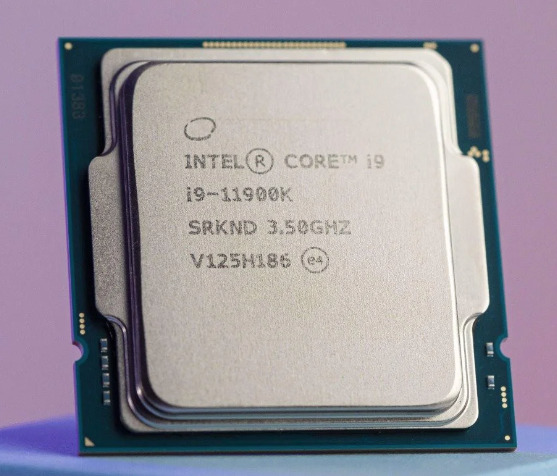
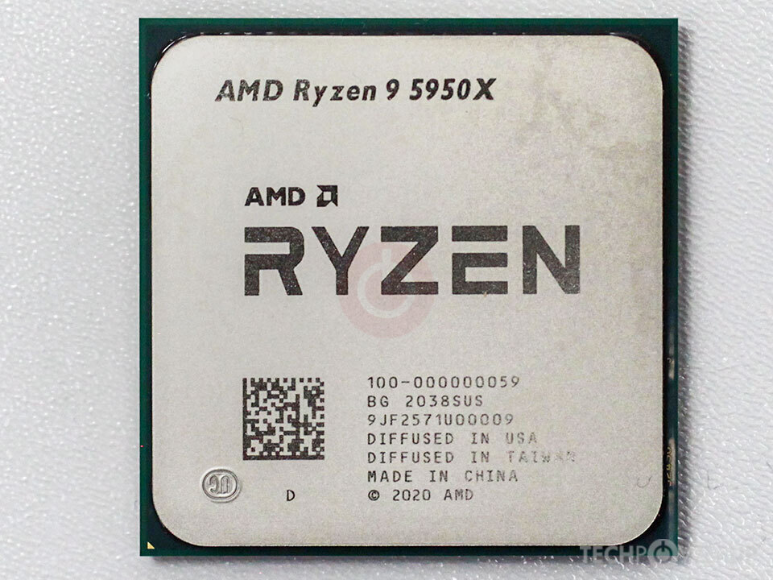
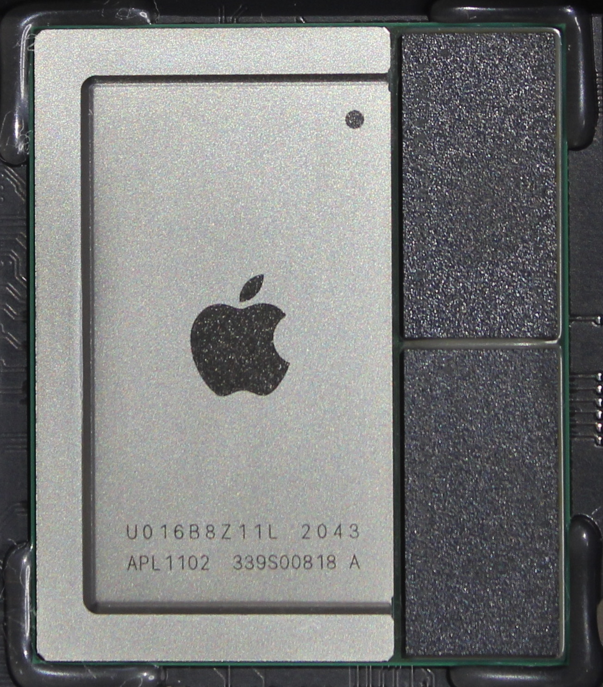

Central Processing Units
CPUs are the brain of the computer, responsible for executing instructions and processing data. Here are some popular CPUs:



CPUs are the brain of the computer, responsible for executing instructions and processing data. Here are some popular CPUs:


